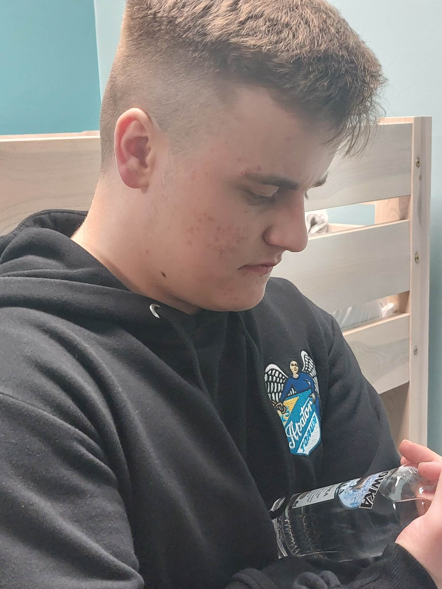

Koszykówka, potem pomysl na rozszerzenie spotkań do 2 Razy w tygodniu. Mój cel był jasny spędzić z tobą czas. Twój? Niewiem pewnie spędzić czas z Szymkiem. Nic dziwnego. Ale nasza 3 osobowa relacja mocno sie rozrosła zaczynając od dodania baseballa do repertuaru. Pojawiła się piłka nożna futbol amerykański. Razem prawie graliśmy w tenisa nawet.